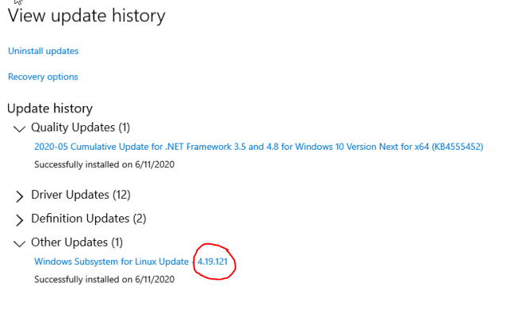
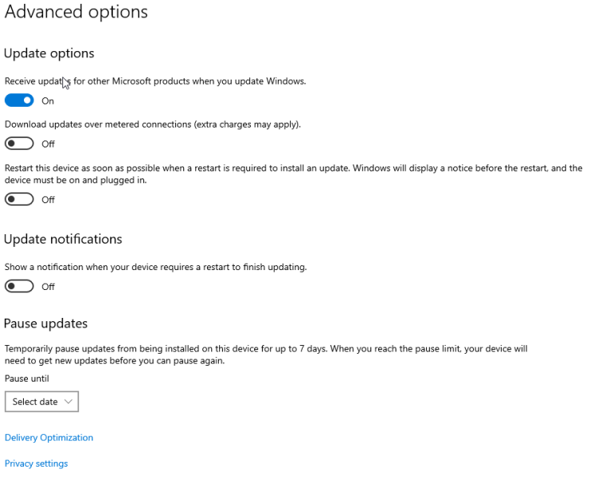
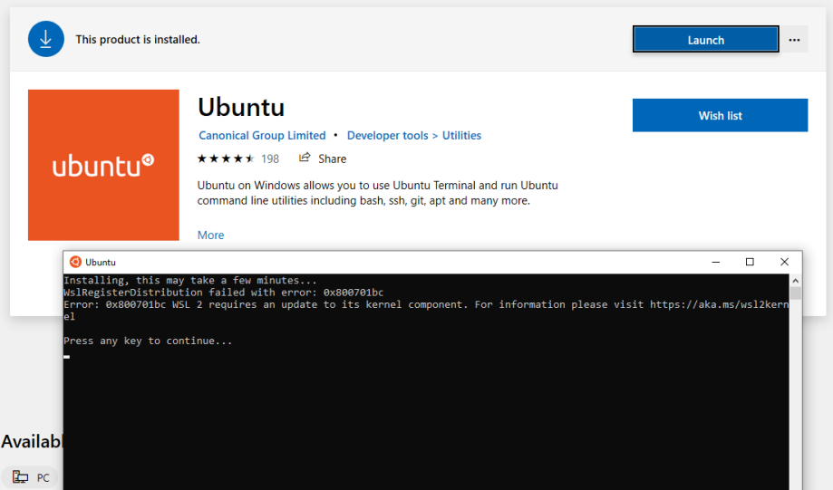

Introduction
Windows Subsystem for Linux (WSL) is a Windows 10 feature that enables users to run native Linux command-line tools directly on Windows. WSL is a containerized environment within which users can run Linux native applications from the command line of the Windows 10 shell without requiring the complexity of a dual boot environment. Internally, WSL is tightly integrated with the Microsoft Windows operating system, which allows it to run Linux applications alongside traditional Windows desktop and modern store apps.

With WSL 2 and GPU paravirtualization technology, Microsoft enables developers to run GPU accelerated applications on Windows.
Getting Started
Getting started with running CUDA on WSL requires you to complete these steps in order:
Installing Microsoft Windows Insider Program Builds
Install the latest builds from the Microsoft Windows Insider Program
-
Register for the Microsoft Windows Insider Program.
-
Install the latest build from the Dev Channel.
Note:Ensure that you install Build version 20145 or higher. We recommend being on WIP OS 21332 and higher with Linux Kernel 5.4.91+ for the best performance.
You can check your build version number by running winver via the Windows Run command.
Installing NVIDIA Drivers
-
Download the NVIDIA Driver from the download section on the CUDA on WSL page. Choose the appropriate driver depending on the type of NVIDIA GPU in your system - GeForce and Quadro.
-
Install the driver using the executable. This is the only driver you need to install.
-
The DirectX WSL driver is installed automatically along with other driver components so no additional action is needed for installation. This driver enables graphics on WSL2.0 by supporting DX12 APIs. TensorFlow with DirectML support on WSL will get NV GPU hardware acceleration for training and inference workloads. There are no present capabilities in WSL, hence the driver is oriented towards compute/machine learning tasks. For some helpful examples, see https://docs.microsoft.com/en-us/windows/win32/direct3d12/gpu-tensorflow-wsl.
Do not install any Linux display driver in WSL. The Windows Display Driver will install both the regular driver components for native Windows and for WSL support.
NVIDIA is aware of a specific installation issue reported on mobile platforms with the WIP driver 465.12 posted on 11/16/2020. A known workaround will be to disable and reenable the GPU adapter from device manager at system start. We are working on a fix for this issue and will have an updated driver soon.
As an alternative, users may opt to roll back to an earlier driver from device manager driver updates.
Installing WSL 2
This section includes details about installing WSL 2, including setting up a Linux distribution of your choice from the Microsoft Store.
- Install WSL 2 by following the instructions in the Microsoft documentation available here.
- Ensure you have the latest kernel by clicking “Check for updates” in the “Windows
Update” section of the Settings app. If the right update with the kernel 4.19.121+
is installed, you should be able to see it in the Windows Update history.
Alternatively, you can check the version number by running the following command in
PowerShell:
wsl cat /proc/version -
If you don’t see this update, then in the Windows Update Advanced options,
make sure to enable recommended Microsoft updates and run the check again:

-
If you don’t have the last WSL kernel updated, you will see the following
blocking warning upon trying to launch a Linux distribution within WSL 2.

-
Launch the Linux distribution and make sure it runs in WSL 2 mode using
the following command:
wsl.exe --list -v command
Setting up CUDA Toolkit
It is recommended to use the Linux package manager to install the CUDA for the Linux distributions supported under WSL 2. Follow these instructions to install the CUDA Toolkit.
First, set up the CUDA network repository. The instructions shown here are for Ubuntu 18.04. See the CUDA Linux Installation Guide for more information on other distributions.
$ apt-key adv --fetch-keys http://developer.download.nvidia.com/compute/cuda/repos/ubuntu1804/x86_64/7fa2af80.pub
$ sh -c 'echo "deb http://developer.download.nvidia.com/compute/cuda/repos/ubuntu1804/x86_64 /" > /etc/apt/sources.list.d/cuda.list'
$ apt-get update
Now install CUDA. Note that for WSL 2, you should use the cuda-toolkit-<version> meta-package to avoid installing the NVIDIA driver that is typically bundled with the toolkit. You can also install other components of the toolkit by choosing the right meta-package.
Do not choose the cuda, cuda-11-0, or cuda-drivers meta-packages under WSL 2 since these packages will result in an attempt to install the Linux NVIDIA driver under WSL 2.
$ apt-get install -y cuda-toolkit-11-0
Running CUDA Applications
Just run your CUDA app as you would run it under Linux! Once the driver is installed there is nothing more to do to run existing CUDA applications that were built on Linux.
A snippet of running the BlackScholes Linux application from the CUDA samples is shown below.
Build the CUDA samples available under /usr/local/cuda/samples from your installation of the CUDA Toolkit in the previous section. The BlackScholes application is located under /usr/local/cuda/samples/4_Finance/BlackScholes. Alternatively, you can transfer a binary built on Linux to WSL 2!
C:\> wsl
To run a command as administrator (user “root”), use “sudo <command>”.
See “man sudo_root” for details.
$ ./BlackScholes
Initializing data...
...allocating CPU memory for options.
...allocating GPU memory for options.
...generating input data in CPU mem.
...copying input data to GPU mem.
Data init done.
Executing Black-Scholes GPU kernel (131072 iterations)...
Options count : 8000000
BlackScholesGPU() time : 1.314299 msec
Effective memory bandwidth: 60.868973 GB/s
Gigaoptions per second : 6.086897
...
Setting up to Run Containers
This chapter describes the workflow for setting up the NVIDIA Container Toolkit in preparation for running GPU accelerated containers.
Install Docker
Use the Docker installation script to install Docker for your choice of WSL 2 Linux distribution. Note that NVIDIA Container Toolkit does not yet support Docker Desktop WSL 2 backend.
curl https://get.docker.com | sh
Install NVIDIA Container Toolkit
Now install the NVIDIA Container Toolkit (previously known as nvidia-docker2). WSL 2 support is available starting with nvidia-docker2 v2.3 and the underlying runtime library (libnvidia-container >= 1.2.0-rc.1).
For brevity, the installation instructions provided here are for Ubuntu 18.04 LTS.
Setup the stable and experimental repositories and the GPG key. The changes to the runtime to support WSL 2 are available in the experimental repository.
$ distribution=$(. /etc/os-release;echo $ID$VERSION_ID)
$ curl -s -L https://nvidia.github.io/nvidia-docker/gpgkey | sudo apt-key add -
$ curl -s -L https://nvidia.github.io/nvidia-docker/$distribution/nvidia-docker.list | sudo tee /etc/apt/sources.list.d/nvidia-docker.list
$ curl -s -L https://nvidia.github.io/libnvidia-container/experimental/$distribution/libnvidia-container-experimental.list | sudo tee /etc/apt/sources.list.d/libnvidia-container-experimental.list
Install the NVIDIA runtime packages (and their dependencies) after updating the package listing.
$ sudo apt-get update
$ sudo apt-get install -y nvidia-docker2
Open a separate WSL 2 window and start the Docker daemon again using the following commands to complete the installation.
$ sudo service docker stop
$ sudo service docker start
Running CUDA Containers
In this section, we will walk through some examples of running GPU containers in a WSL 2 environment.
Simple CUDA Containers
In this example, let’s run an N-body simulation CUDA sample. This example has already been containerized and available from NGC.
$ docker run --gpus all nvcr.io/nvidia/k8s/cuda-sample:nbody nbody -gpu -benchmark
From the console, you should see an output as shown below.
$ docker run --gpus all nvcr.io/nvidia/k8s/cuda-sample:nbody nbody -gpu -benchmark
Run "nbody -benchmark [-numbodies=<numBodies>]" to measure performance.
-fullscreen (run n-body simulation in fullscreen mode)
-fp64 (use double precision floating point values for simulation)
-hostmem (stores simulation data in host memory)
-benchmark (run benchmark to measure performance)
-numbodies=<N> (number of bodies (>= 1) to run in simulation)
-device=<d> (where d=0,1,2.... for the CUDA device to use)
-numdevices=<i> (where i=(number of CUDA devices > 0) to use for simulation)
-compare (compares simulation results running once on the default GPU and once on the CPU)
-cpu (run n-body simulation on the CPU)
-tipsy=<file.bin> (load a tipsy model file for simulation)
NOTE: The CUDA Samples are not meant for performance measurements. Results may vary when GPU Boost is enabled.
> Windowed mode
> Simulation data stored in video memory
> Single precision floating point simulation
> 1 Devices used for simulation
GPU Device 0: "GeForce GTX 1070" with compute capability 6.1
> Compute 6.1 CUDA device: [GeForce GTX 1070]
15360 bodies, total time for 10 iterations: 11.949 ms
= 197.446 billion interactions per second
= 3948.925 single-precision GFLOP/s at 20 flops per interaction
Jupyter Notebooks
In this example, let’s run Jupyter notebook.
$ docker run -it --gpus all -p 8888:8888 tensorflow/tensorflow:latest-gpu-py3-jupyter
After the container starts, you can see the following output on the console.
________ _______________
___ __/__________________________________ ____/__ /________ __
__ / _ _ \_ __ \_ ___/ __ \_ ___/_ /_ __ /_ __ \_ | /| / /
_ / / __/ / / /(__ )/ /_/ / / _ __/ _ / / /_/ /_ |/ |/ /
/_/ \___//_/ /_//____/ \____//_/ /_/ /_/ \____/____/|__/
WARNING: You are running this container as root, which can cause new files in
mounted volumes to be created as the root user on your host machine.
To avoid this, run the container by specifying your user's userid:
$ docker run -u $(id -u):$(id -g) args...
[I 04:00:11.167 NotebookApp] Writing notebook server cookie secret to /root/.local/share/jupyter/runtime/notebook_cookie_secret
jupyter_http_over_ws extension initialized. Listening on /http_over_websocket
[I 04:00:11.447 NotebookApp] Serving notebooks from local directory: /tf
[I 04:00:11.447 NotebookApp] The Jupyter Notebook is running at:
[I 04:00:11.447 NotebookApp] http://72b6a6dfac02:8888/?token=6f8af846634535243512de1c0b5721e6350d7dbdbd5e4a1b
[I 04:00:11.447 NotebookApp] or http://127.0.0.1:8888/?token=6f8af846634535243512de1c0b5721e6350d7dbdbd5e4a1b
[I 04:00:11.447 NotebookApp] Use Control-C to stop this server and shut down all kernels (twice to skip confirmation).
[C 04:00:11.451 NotebookApp]
To access the notebook, open this file in a browser:
file:///root/.local/share/jupyter/runtime/nbserver-1-open.html
Or copy and paste one of these URLs:
http://72b6a6dfac02:8888/?token=6f8af846634535243512de1c0b5721e6350d7dbdbd5e4a1b
or http://127.0.0.1:8888/?token=6f8af846634535243512de1c0b5721e6350d7dbdbd5e4a1b
After the URL is available from the console output, input the URL into your browser to start developing with the Jupyter notebook. Ensure that you replace 127.0.0.1 with localhost in the URL when connecting to the Jupyter notebook from the browser.
If you navigate to the Cell menu and select the Run All item, then check the log within the Jupyter notebook WSL 2 container to see the work accelerated by the GPU of your Windows PC.
...
[I 04:56:16.535 NotebookApp] 302 GET /?token=102d547c256eee3661b25d957de93331e02107f8b8ef5f2e (172.17.0.1) 0.46ms
[I 04:56:24.409 NotebookApp] Writing notebook-signing key to /root/.local/share/jupyter/notebook_secret
[W 04:56:24.410 NotebookApp] Notebook tensorflow-tutorials/classification.ipynb is not trusted
[I 04:56:25.223 NotebookApp] Kernel started: 6b4f715b-4d0d-4b3b-936c-0aa74a4e14a0
2020-06-14 04:57:14.728110: I tensorflow/stream_executor/platform/default/dso_loader.cc:44] Successfully opened dynamic library libnvinfer.so.6
...
2020-06-14 04:57:28.524537: I tensorflow/core/common_runtime/gpu/gpu_device.cc:1324] Could not identify NUMA node of platform GPU id 0, defaulting to 0. Your kernel may not have been built with NUMA support.
2020-06-14 04:57:28.524837: E tensorflow/stream_executor/cuda/cuda_gpu_executor.cc:967] could not open file to read NUMA node: /sys/bus/pci/devices/0000:01:00.0/numa_node
Your kernel may have been built without NUMA support.
2020-06-14 04:57:28.525120: I tensorflow/core/common_runtime/gpu/gpu_device.cc:1241] Created TensorFlow device (/job:localhost/replica:0/task:0/device:GPU:0 with 6750 MB memory) -> physical GPU (device: 0, name: GeForce GTX 1070, pci bus id: 0000:01:00.0, compute capability: 6.1)
2020-06-14 04:57:30.755782: I tensorflow/stream_executor/platform/default/dso_loader.cc:44] Successfully opened dynamic library libcublas.so.10
[I 04:58:26.083 NotebookApp] Saving file at /tensorflow-tutorials/classification.ipynb
[I 05:00:26.093 NotebookApp] Saving file at /tensorflow-tutorials/classification.ipynb
Deep Learning Framework Containers
In this example, let’s run a TensorFlow container to do a ResNet-50 training run using GPUs using the 20.03 container from NGC. This is done by launching the container and then running the training script from the nvidia-examples directory.
$ docker run --gpus all -it --shm-size=1g --ulimit memlock=-1 --ulimit stack=67108864 nvcr.io/nvidia/tensorflow:20.03-tf2-py3
================
== TensorFlow ==
================
NVIDIA Release 20.03-tf2 (build 11026100)
TensorFlow Version 2.1.0
Container image Copyright (c) 2019, NVIDIA CORPORATION. All rights reserved.
Copyright 2017-2019 The TensorFlow Authors. All rights reserved.
Various files include modifications (c) NVIDIA CORPORATION. All rights reserved.
NVIDIA modifications are covered by the license terms that apply to the underlying project or file.
NOTE: MOFED driver for multi-node communication was not detected.
Multi-node communication performance may be reduced.
root@c64bb1f70737:/workspace# cd nvidia-examples/
root@c64bb1f70737:/workspace/nvidia-examples# ls
big_lstm build_imagenet_data cnn tensorrt
root@c64bb1f70737:/workspace/nvidia-examples# python cnn/resnet.py
...
WARNING:tensorflow:Expected a shuffled dataset but input dataset `x` is not shuffled. Please invoke `shuffle()` on input dataset.
2020-06-15 00:01:49.476393: I tensorflow/stream_executor/platform/default/dso_loader.cc:44] Successfully opened dynamic library libcublas.so.10
2020-06-15 00:01:49.701149: I tensorflow/stream_executor/platform/default/dso_loader.cc:44] Successfully opened dynamic library libcudnn.so.7
global_step: 10 images_per_sec: 93.2
global_step: 20 images_per_sec: 276.8
global_step: 30 images_per_sec: 276.4
Let's look at another example from Lesson 15 of the Learning TensorFlow tutorial. In this example, the code creates a random matrix with a given size as input and then does a element wise operation on the input tensor.
The example also allows you to observe the speedup when the code is run on the GPU. The source code is shown below.
import sys
import numpy as np
import tensorflow as tf
from datetime import datetime
device_name = sys.argv[1] # Choose device from cmd line. Options: gpu or cpu
shape = (int(sys.argv[2]), int(sys.argv[2]))
if device_name == "gpu":
device_name = "/gpu:0"
else:
device_name = "/cpu:0"
tf.compat.v1.disable_eager_execution()
with tf.device(device_name):
random_matrix = tf.random.uniform(shape=shape, minval=0, maxval=1)
dot_operation = tf.matmul(random_matrix, tf.transpose(random_matrix))
sum_operation = tf.reduce_sum(dot_operation)
startTime = datetime.now()
with tf.compat.v1.Session(config=tf.compat.v1.ConfigProto(log_device_placement=True)) as session:
result = session.run(sum_operation)
print(result)
# Print the results
print("Shape:", shape, "Device:", device_name)
print("Time taken:", datetime.now() - startTime)
Save the code as matmul.py on the host's C drive, which is mapped as /mnt/c in WSL 2. Run the code using the same 20.03 TensorFlow container in the previous example. The results of running this script, launched from the mounted drive C, on a GPU and a CPU are shown below. For simplicity the output is reduced.
$ docker run --gpus all --shm-size=1g --ulimit memlock=-1 --ulimit stack=67108864 -v "${PWD}:/mnt/c" nvcr.io/nvidia/tensorflow:20.03-tf2-py3 python /mnt/c/matmul.py gpu 20000
...
/job:localhost/replica:0/task:0/device:GPU:0 -> device: 0, name: GeForce GTX 1070, pci bus id: 0000:01:00.0, compute capability: 6.1
2020-06-16 02:47:23.142774: I tensorflow/core/common_runtime/direct_session.cc:359] Device mapping:
/job:localhost/replica:0/task:0/device:XLA_CPU:0 -> device: XLA_CPU device
/job:localhost/replica:0/task:0/device:XLA_GPU:0 -> device: XLA_GPU device
/job:localhost/replica:0/task:0/device:GPU:0 -> device: 0, name: GeForce GTX 1070, pci bus id: 0000:01:00.0, compute capability: 6.1
random_uniform/RandomUniform: (RandomUniform): /job:localhost/replica:0/task:0/device:GPU:0
...
Shape: (20000, 20000) Device: /gpu:0
Time taken: 0:00:06.160917
The same example is now run on the CPU.
$ docker run --gpus all --shm-size=1g --ulimit memlock=-1 --ulimit stack=67108864 -v "${PWD}:/mnt/c" nvcr.io/nvidia/tensorflow:20.03-tf2-py3 python /mnt/c/matmul.py cpu 20000
...
random_uniform/RandomUniform: (RandomUniform): /job:localhost/replica:0/task:0/device:CPU:0
2020-06-16 02:35:37.554425: I tensorflow/core/common_runtime/placer.cc:114] random_uniform/RandomUniform: (RandomUniform): /job:localhost/replica:0/task:0/device:CPU:0
transpose: (Transpose): /job:localhost/replica:0/task:0/device:CPU:0
...
Shape: (20000, 20000) Device: /cpu:0
Time taken: 0:00:28.294706
Get started quickly with AI training using pre-trained models available from NVIDIA and the NGC catalog. Follow the instructions in this post for more details.
Changelog
- 3/23/2021: Resolved issues with nvidia-smi crashing on some systems.
- NVIDIA Driver for Windows 10: 470.14
- WIP build: 21332, WSL Linux kernel 5.4.91
- 3/9/2021
- WIP OS 21313+ and Linux kernel 5.4.91
- Do not use WIP OS 21327
- 1/28/2021: CUDA Toolkit 11.2 support, nvidia-smi, NVML support and critical
performance improvements.
The following software versions are supported with this preview release for WSL 2:
- NVIDIA Driver for Windows 10: 465.42
- Recommended WIP build: 21292
- 12/16/2020: Support for 3060Ti. Fix for installation problems observed in notebooks.
The following software versions are supported with this preview release for WSL 2:
- NVIDIA Driver for Windows 10: 465.21
- 11/16/2020: The following software versions are supported with this preview release
for WSL 2:
- NVIDIA Driver for Windows 10: 465.12
- 9/23/2020: The following software versions are supported with this preview release
for WSL 2:
- NVIDIA Driver for Windows 10: 460.20
- 9/2/2020:
The following software versions are supported with this preview release for WSL 2:
- NVIDIA Driver for Windows 10: 460.15
-
6/19/2020: Updated driver release to address cache coherency issues on some CPU systems, including AMD Ryzen.
The following software versions are supported with this preview release for WSL 2:- NVIDIA Driver for Windows 10: 455.41
-
6/17/2020: Initial Version.
The following software versions are supported with this preview release for WSL 2:- NVIDIA Driver for Windows 10: 455.38
- NVIDIA Container Toolkit: nvidia-docker2 (2.3) and libnvidia-container (>= 1.2.0-rc.1)
7.1. New Features
The following new features are included in this release:
- CUDA Toolkit 11.2 support
- Critical performance improvements
- nvidia-smi packaged
- Full NVML support
- IPC support
7.2. Resolved Issues
- Fixed nvidia-smi issues on some systems.
7.3. Known Limitations
The following features are not supported in this release:
- Note that NVIDIA Container Toolkit does not yet support Docker Desktop WSL 2 backend. Use Docker-CE for Linux instead inside your WSL 2 Linux distribution.
- nvidia-smi is now supported but in order to use it, please copy it
to /usr/bin and set appropriate permissions with the below
commands:
cp /usr/lib/wsl/lib/nvidia-smi /usr/bin/nvidia-smi chmod ogu+x /usr/bin/nvidia-smi
We will soon provide a better user experience when there is OS support. - CUDA debugging or profiling tools are not supported in WSL 2. This capability will be added in a future release.
- cumemmap IPC with fd is now supported. Other Legacy IPC APIs are not yet supported.
- Unified Memory is limited to the same feature set as on native Windows systems.
- With the NVIDIA Container Toolkit for Docker 19.03, only --gpus all is supported. This means that on multi-GPU systems it is not possible to filter for specific GPU devices by using specific index numbers to enumerate GPUs.
- When installing CUDA using the package manager, do not use the cuda, cuda-11-0, or cuda-drivers meta-packages under WSL 2. These packages have dependencies on the NVIDIA driver and the package manager will attempt to install the NVIDIA Linux driver which may result in issues. The NVIDIA Windows 10 driver should be the only driver present in the system.
- When running the NGC Deep Learning (DL) Framework GPU containers in WSL 2, you may
encounter a message:
Note that this message is an incorrect warning for WSL 2 and will be fixed in future releases of the DL Framework containers to correctly detect the NVIDIA GPUs. The DL Framework containers will still continue to be accelerated using CUDA on WSL 2.
The NVIDIA Driver was not detected. GPU functionality will not be available.
7.4. Known Issues
The following are known issues in this release:
- CUDA on WSL2 is not to be used with the latest Microsoft Windows 10 Insider Preview Build 20226 due to known issues. Please use newer builds >= 20236 or revert to the older build 20221 to use CUDA on WSL2.
- Warning: Please do not update to WIP OS 21327 if you would like to use WSL with GPU support.
Troubleshooting
Here is a collection of potential errors that you may encounter when using CUDA on WSL 2:
Container Runtime Initialization Errors
-
In some cases, when running a Docker container, you may encounter nvidia-container-cli : initialization error:
$ sudo docker run --gpus all nvcr.io/nvidia/k8s/cuda-sample:nbody nbody -gpu -benchmark docker: Error response from daemon: OCI runtime create failed: container_linux.go:349: starting container process caused "process_linux.go:449: container init caused \"process_linux.go:432: running prestart hook 0 caused \\\"error running hook: exit status 1, stdout: , stderr: nvidia-container-cli: initialization error: driver error: failed to process request\\\\n\\\"\"": unknown. ERRO[0000] error waiting for container: context canceled - This usually indicates that the right Microsoft Windows Insider Preview Builds, WSL 2, NVIDIA drivers and NVIDIA Container Toolkit may not be installed correctly. Use the dxdiag tools from the Run dialog and provide the diagnostic logs to NVIDIA. You can also use the CUDA on WSL 2 Forums to get in touch with NVIDIA product and engineering teams for help.
Notices
Notice
This document is provided for information purposes only and shall not be regarded as a warranty of a certain functionality, condition, or quality of a product. NVIDIA Corporation (“NVIDIA”) makes no representations or warranties, expressed or implied, as to the accuracy or completeness of the information contained in this document and assumes no responsibility for any errors contained herein. NVIDIA shall have no liability for the consequences or use of such information or for any infringement of patents or other rights of third parties that may result from its use. This document is not a commitment to develop, release, or deliver any Material (defined below), code, or functionality.
NVIDIA reserves the right to make corrections, modifications, enhancements, improvements, and any other changes to this document, at any time without notice.
Customer should obtain the latest relevant information before placing orders and should verify that such information is current and complete.
NVIDIA products are sold subject to the NVIDIA standard terms and conditions of sale supplied at the time of order acknowledgement, unless otherwise agreed in an individual sales agreement signed by authorized representatives of NVIDIA and customer (“Terms of Sale”). NVIDIA hereby expressly objects to applying any customer general terms and conditions with regards to the purchase of the NVIDIA product referenced in this document. No contractual obligations are formed either directly or indirectly by this document.
NVIDIA products are not designed, authorized, or warranted to be suitable for use in medical, military, aircraft, space, or life support equipment, nor in applications where failure or malfunction of the NVIDIA product can reasonably be expected to result in personal injury, death, or property or environmental damage. NVIDIA accepts no liability for inclusion and/or use of NVIDIA products in such equipment or applications and therefore such inclusion and/or use is at customer’s own risk.
NVIDIA makes no representation or warranty that products based on this document will be suitable for any specified use. Testing of all parameters of each product is not necessarily performed by NVIDIA. It is customer’s sole responsibility to evaluate and determine the applicability of any information contained in this document, ensure the product is suitable and fit for the application planned by customer, and perform the necessary testing for the application in order to avoid a default of the application or the product. Weaknesses in customer’s product designs may affect the quality and reliability of the NVIDIA product and may result in additional or different conditions and/or requirements beyond those contained in this document. NVIDIA accepts no liability related to any default, damage, costs, or problem which may be based on or attributable to: (i) the use of the NVIDIA product in any manner that is contrary to this document or (ii) customer product designs.
No license, either expressed or implied, is granted under any NVIDIA patent right, copyright, or other NVIDIA intellectual property right under this document. Information published by NVIDIA regarding third-party products or services does not constitute a license from NVIDIA to use such products or services or a warranty or endorsement thereof. Use of such information may require a license from a third party under the patents or other intellectual property rights of the third party, or a license from NVIDIA under the patents or other intellectual property rights of NVIDIA.
Reproduction of information in this document is permissible only if approved in advance by NVIDIA in writing, reproduced without alteration and in full compliance with all applicable export laws and regulations, and accompanied by all associated conditions, limitations, and notices.
THIS DOCUMENT AND ALL NVIDIA DESIGN SPECIFICATIONS, REFERENCE BOARDS, FILES, DRAWINGS, DIAGNOSTICS, LISTS, AND OTHER DOCUMENTS (TOGETHER AND SEPARATELY, “MATERIALS”) ARE BEING PROVIDED “AS IS.” NVIDIA MAKES NO WARRANTIES, EXPRESSED, IMPLIED, STATUTORY, OR OTHERWISE WITH RESPECT TO THE MATERIALS, AND EXPRESSLY DISCLAIMS ALL IMPLIED WARRANTIES OF NONINFRINGEMENT, MERCHANTABILITY, AND FITNESS FOR A PARTICULAR PURPOSE. TO THE EXTENT NOT PROHIBITED BY LAW, IN NO EVENT WILL NVIDIA BE LIABLE FOR ANY DAMAGES, INCLUDING WITHOUT LIMITATION ANY DIRECT, INDIRECT, SPECIAL, INCIDENTAL, PUNITIVE, OR CONSEQUENTIAL DAMAGES, HOWEVER CAUSED AND REGARDLESS OF THE THEORY OF LIABILITY, ARISING OUT OF ANY USE OF THIS DOCUMENT, EVEN IF NVIDIA HAS BEEN ADVISED OF THE POSSIBILITY OF SUCH DAMAGES. Notwithstanding any damages that customer might incur for any reason whatsoever, NVIDIA’s aggregate and cumulative liability towards customer for the products described herein shall be limited in accordance with the Terms of Sale for the product.
VESA DisplayPort
DisplayPort and DisplayPort Compliance Logo, DisplayPort Compliance Logo for Dual-mode Sources, and DisplayPort Compliance Logo for Active Cables are trademarks owned by the Video Electronics Standards Association in the United States and other countries.
HDMI
HDMI, the HDMI logo, and High-Definition Multimedia Interface are trademarks or registered trademarks of HDMI Licensing LLC.